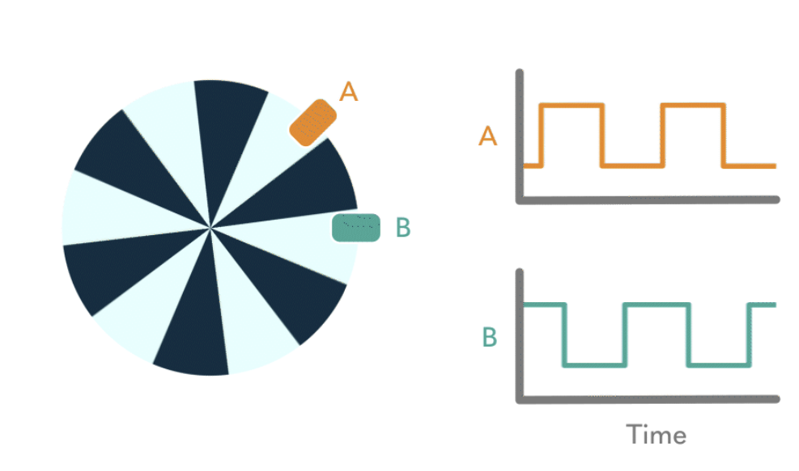
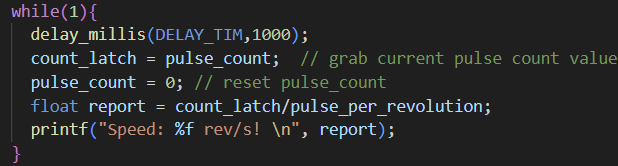
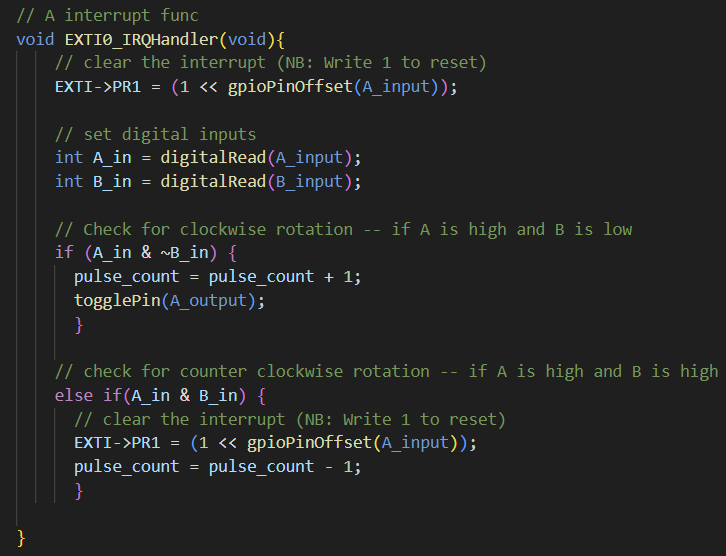
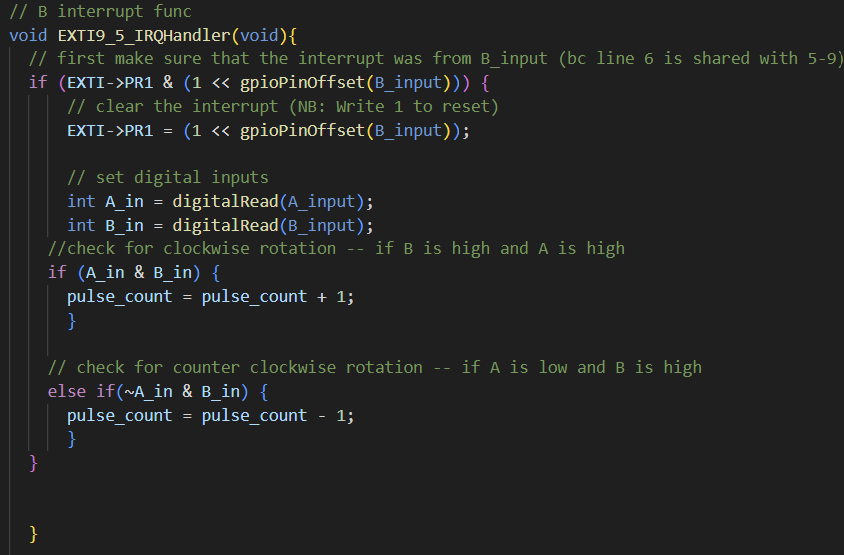
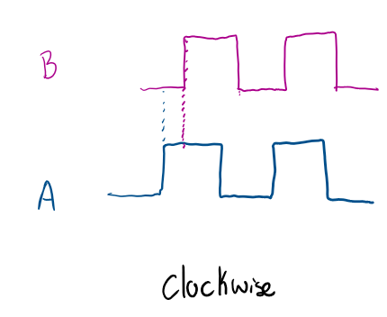
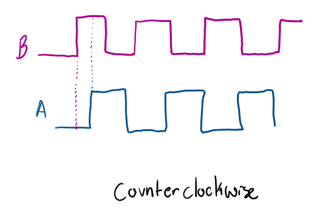
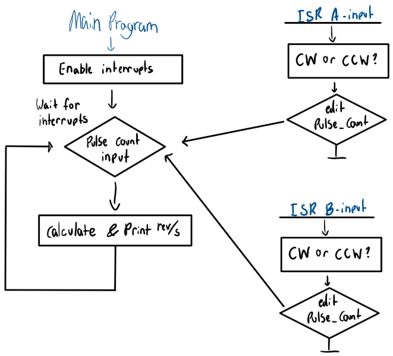
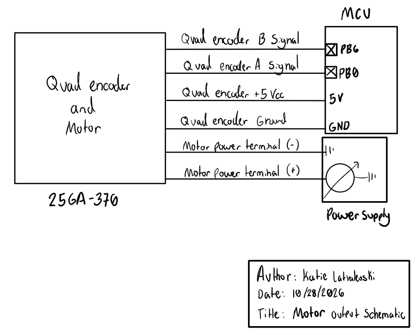

Lab 5
This report contains Lab 5, which uses interrupts to find the direction and revolutions per second of a 25GA-370 motor with a gear ratio of -34. This lab took me about 18 hours to complete. Future versions of this lab could consider including a more clear example of a flowchart diagram for C-code, as the current link is somewhat confusing.
Hardware
The motor uses an attached encoder which has six wires: quad encoder B-signal, quad encoder A-signal, quad encoder +5V vcc, quad encoder ground, negative power terminal, and positive power terminal. As explained in the lab description on the E155 website, the quad encoder places a patterned disk on the motor with two alternating patterns (see Figure 1). Then, two sensors that are placed on encoder. The first sensor (connected to the A-signal) goes high when one of the colors passes it and low when the next color passes it. The second sensor (connected to the B-signal) works the same way, but is located clockwise from the first sensor such that the wave from the B-signal is 90 degrees out of phase from the A-signal wave. Thus, the motor speed and direction can be measured. Using both the A and B signals allows the MCU to run correctly at high and low speeds.

Figure 1: Quad Encoder; image taken from a GIF on the E155 website Lab 5 description
Software
The MCU code uses interrupts in order to detect the encoder impulses. See the code snippets below:
Click to view the main while loop

Figure 2: Main while loopClick to view the A-signal interrupt

Figure 3: A-signal interruptClick to view the B-signal interrupt

Figure 4: B-signal interruptThis code works by using the global variable “count” to keep track of the number of pulses from A and B that happen in a second. The main while loop has a timer that runs for a second. After that second, count is held in a new variable, called count_latch and count is reset to zero again. count_latch is now the number of pulses per second. Pulses per second, Ps, can be divided by Pr, the known number of pulses per revolution for this motor, which is is 408 pulses/rev, in order to get N, the number of revolutions in a second.
\[ N = \frac{P_s}{P_r} \\ \\ = \frac{P_s}{408 \text{ pulses/rev}} \\ \]
In order to determine direction, the variable count gets added to when the motion is clockwise and subtracted from when the motion is counterclockwise. The direction is determined by the values of the A and B signals as well as the interrupt. The interrupts are enabled for both the rising and falling edges of the A-signal and the B-signal. On those edges, we know certain things about the level of each signal. When the motion is clockwise, the A-signal is somewhat ahead of the B-signal (Figure 5a). Therefore, we know that clockwise motion occurs when we get an interrupt from A, A is high, and B is low, or when we get an interrupt from B, B is high, and A is high. Alternatively, we know that when we have counterclockwise motion, the B-signal is somewhat ahead of the A-signal (Figure 5b). Thus, counterclockwise motion occurs when we get an interrupt from A, A is high, and B is high, or we we get an interrupt from B, A is low, and B is high. Using this setup, we can accurately get the rpm of the motor.

Figure 5a: Clockwise Motion

Figure 5b: B-signal interrupt
The flowchart below shown in Figure 6 describes how these interrupts interact with the main loop:

Figure 6: Flowchart
Schematic
Figure 7 shows how the motor is powered and run from the MCU and the power supply.Click to view the motor schematic

Figure 7: Motor SchematicAI Prototype
I used Gemini for my AI Prototype. My initial prompt got me two results: First, it recommended using a hardware encoder mode on Timer 2. It specifically stated that this would work better than EXTI GPIO pin inputs because parsing the signals comes directly from hardware. This would likely work, but doesn’t work with my main code loop. Then, it gave another example, which did use EXTI input pins, but also added a lot of extra code that I didn’t want (e.g. adding an encoder table and finding distance between the two quad encoder points A and B). After prompting it to remove the unnecessary code and to program it as it would program it if it were using Segger (instead of the Hal-framework), it gave me code that was very similar to my own. This code compiled, did collect interrupts correctly, and it would’ve saved me time if I used it.